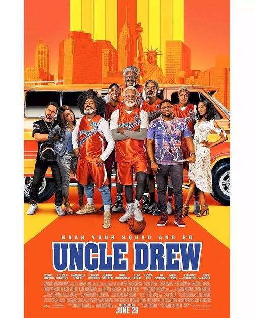

篮球电影推荐
1.《绝杀慕尼黑》
《绝杀慕尼黑》是由安东・梅格迪契夫执导，弗拉基米尔・马什科夫、约翰・沙维奇、马拉特・巴沙罗夫、谢尔盖・加尔迈什、伊万・科列斯尼科夫主演的传记类剧情电影 。于2017年12月28日在俄罗斯上映，于2019年6月13日在中国上映 。 该片讲述了发生在1972年慕尼黑奥运会的篮球锦标赛的决赛中，苏联篮球队打败了保持了36年全胜纪录的美国队的故事 。 该片以30亿卢布创下俄罗斯影史本土电影票房纪录
电影根据体育历史中著名的传奇真实事件改编，讲述了1972年慕尼黑奥运会篮球决赛中，前苏联篮球队打败了保持了36年全胜纪录的美国队的传奇故事。在决赛结束前三秒钟，美国队以一分优势领先。美国队已经开始提前庆祝比赛的胜利了，因为他们相信比赛结果已成定局。然而，一位来自苏联的不知名篮球教练，率领着艰难、困苦、贫穷中的苏联国家队，比赛结果发生逆转，整个篮球历史也发生了改变。
该片部分影评
该片向中国观众展示了俄罗斯电影工业的实力以及精益求精的态度，即使把“战场”凝聚于一片小小的球场，也可以凭借高超的拍摄技法和剪辑节奏，呈现出战斗民族与生俱来的精神色彩。
与传统好莱坞式的体育片不同，该片用了接近一半的篇幅，将最后前苏联男篮对美国男篮的整场比赛几乎都还原了，基本上两队每一次得分都有交代。所以尽管在走进电影院之前，仅从片名大家就已经知道了结果，但是决赛跌宕起伏的过程，却依然让大家看得热血沸腾。
一波三折的剧情，在情理之中，在意料之外，这是戏剧的经典表达，即使是不懂篮球的人，也会被一波三折剧情中的情绪所感染，感到热血沸腾。表面上看，《绝杀慕尼黑》是一场篮球赛的重新演绎，实际上，《绝杀慕尼黑》通过一场直观的比赛，表达了战斗到底的意愿，观众所感动的不仅是曲折的剧情，也感叹生活中的奇迹。从这个意义说，《绝杀慕尼黑》让人重新认识了俄罗斯电影
2.《德鲁大叔》

《德鲁大叔》是由查理斯・斯通执导，尼克・科罗尔、沙奎尔・奥尼尔、里雷・霍沃利、凯里・欧文、雷吉・米勒等主演的篮球喜剧电影。该片于2019年1月11日在中国上映 。 电影讲述了达克斯组织一波老年人，违反规则参加洛克街头篮球比赛的故事
达克斯在少年时因被人“盖帽”而失去了征战篮球的梦想。长大后达克斯好不容易组建了球队，但辛苦培养的明星球员却被死对头挖走。处在人生谷底的达克斯遇见了功成身退的德鲁大叔，感到了久违的希望。达克斯为了夺冠，孤注一掷地说服德鲁大叔重新出山，两人踏上了英雄集结的旅途，找回德鲁大叔以前的队友，欲征战洛克公园街球联赛
该片部分影评
《德鲁大叔》是一部让观众开心的喜剧片，也是一部点燃激情的体育片，更是一部引发思考的哲理片，没有故弄玄虚，没有隐喻暗喻，而是用最洗练的运动语言，传递最朴素却也最宝贵的生活哲学。凯里・欧文在影片中化身德鲁大叔，蝴蝶穿花般的华丽技巧，不需要任何特效处理，纯粹篮球技艺赏心悦目 。
部分观众表示，通过影片中这群篮球巨星精彩喜人的表演，观众不仅可以看到众角色成长的心路历程，还能细细品味这群球场上街球高手如何挑战年龄与身体的极限、摆脱来自身份的束缚，从而化解多年未解的心结，再次携手重返战场，共同演绎篮球精神的不朽传奇 。
3.《雷霆万钧》
《雷霆万钧2012》是由约翰・怀特塞尔执导，布兰登・T・杰克逊、威廉・罗格斯戴尔、凯文・杜兰特等人主演的喜剧片，上映于2012年。 讲述了篮球巨星凯文・杜兰特突然和一个16岁的小球迷交换了天赋，一系列的笑料由此展开。
本片是由著名篮球明星凯文・杜兰特亲自主演，影片讲述篮球巨星凯文・杜兰特和一个16岁的小球迷布莱恩(Taylor Gray饰)交换了天赋，当布莱恩从一个肢体不协调的年轻球迷变成他崇拜的篮球英雄凯文・杜兰特时，他的生活也随之改变。布莱恩一跃成为高中校队的明星，而凯文・杜兰特却失去了打篮球的技能，甚至连一记投篮也投不进去。这时季后赛即将来临，他们两人会怎样面对这一切呢。
该片部分影评
《雷霆万钧》是一部你好我好的影片，看着温暖。 高中篮球队预选队员布莱恩痴迷篮球，水平却很臭。一次与篮球明星凯文意外相遇，被赠送了篮球后，俩人彼此交换了天赋。从此，布莱恩拥有了凯文的全部篮球技艺，被捧为学校的超级新星，拥趸大把；而凯文却一落千丈，创造了训练三小时也不进一球的记录。 当布莱恩醒悟自己是被魔幻后，经过思考，他勇敢地将那只魔幻篮球还回了凯文。凯文在赛场上重现雄风。 做回了自己的布莱恩，只能继续参加比赛。那是最后一场关乎进州赛的比赛。赛场上，布莱恩反应迟钝，举球唯诺，令教练和观众无法接受。布莱恩退缩了，提出自罚下场。教练坚决不同意。 骑虎难下的布莱恩只能继续上场。关键时刻，凯文出现在观众入口处向他示意。布莱恩迅速冷静下来，智慧，要运用智慧。他告诉队友们现在只能打组织，死防守。 比赛即将取胜。最后时刻，当篮球传到布莱恩手上的时候，没有时间转手了！布莱恩调整呼吸，终于靠自己的力量，而不是凯文的魔力，投出了漂亮的一记。他战胜了自己。全场掌声雷动。 这是一个魔幻浪漫主义的故事，好看，长气力。
4.《我是马布里》
《我是马布里》是由黄建新监制，杨子编剧并导演的篮球类励志故事电影，由斯蒂芬・马布里、吴尊、何冰、郑秀妍等主演。该片于2017年8月4日在中国大陆上映 。 该片讲述了昔日NBA篮球巨星马布里在低谷期遇到了一位来自中国的经纪人，在母亲、朋友和经纪人李楠的鼓励下，马布里重新点燃篮球梦想的火花，决心漂洋过海来到中国找回自己的故事。
被称为“独狼”的NBA球星马布里事业陷入低谷，黯然隐退。在王牌经纪人李楠的邀请和家人的鼓励下，马布里做出了人生中关键的决定――前往中国追寻自己的“篮球梦”。当坐在飞往中国的飞机上，背后却是他在NBA留下的辉煌和遗憾。重新焕发激情和热血的马布里，却没预想辗转到一支没落的球队，遭遇性格各异、士气低落的队友。在去留抉择间，他对意气相投的教练郑亚雷说出了唯一可以使自己留下来的条件――冠军。迎着所有人的质疑和不屑，带领着这支残兵野将的球队，两个拥有共同梦想的男人带领球队踏上了成功概率几乎为零的巅峰征程
该片部分影评
《我是马布里》作为一部以运动题材为主的剧情电影，自身剧情饱满，演员颜值实力全全在线，是一部可圈可点的良心佳作。马布里首次跨界本色出演，得到了圈内外众多知名电影人一致好评。何冰的演技和台词功力更是让人再次眼前一亮，吴尊、高以翔、锦荣、王阳明四人也带给观众不一样的惊喜 。同时影片以大量真实录像素材做快速剪辑，配上马布里内心独白，回顾了他出道、辉煌、迷失、低谷的职业生涯过程，简洁清晰，富有张力 。
《我是马布里》虽是一部关于马布里实现梦想的电影，但影片没有仅仅局限于一人并试图塑造一个英雄，而是包含了多类人与情感。马布里与父亲之间感人温馨的亲情，教练与球员之间亦师亦友的师生情，均是推动剧情的重要线索，但最值得期待的是影片中与众不同的兄弟情。该片向观众传递了正确的价值观和青春该有的正能量。同时电影采用虚构和真实的拍摄手法，将不少马布里运动生涯的真实录像与根据真实经历改编的剧情融合在一起，虚实结合的手法再加上升华的亲情主题和永不放弃的篮球精神，使该片在同类题材中显得较为特殊 。